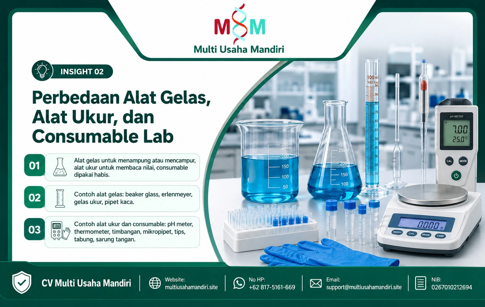
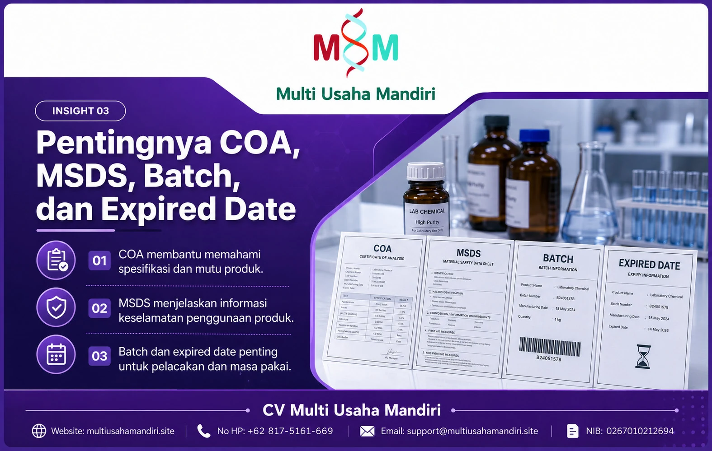
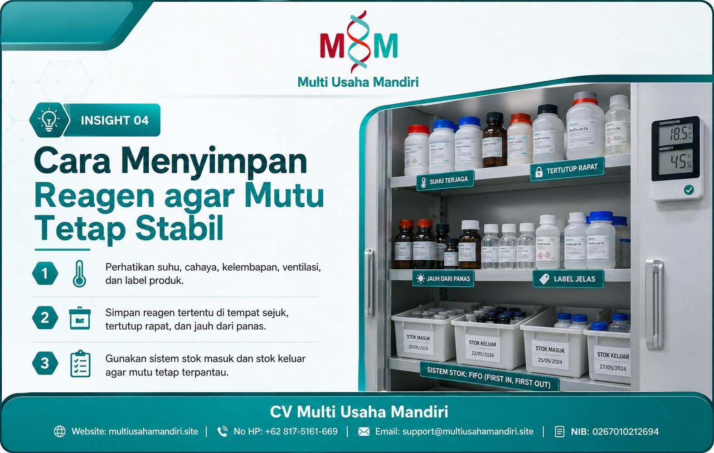
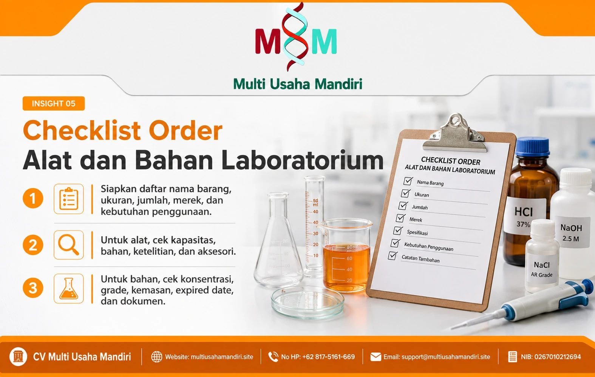
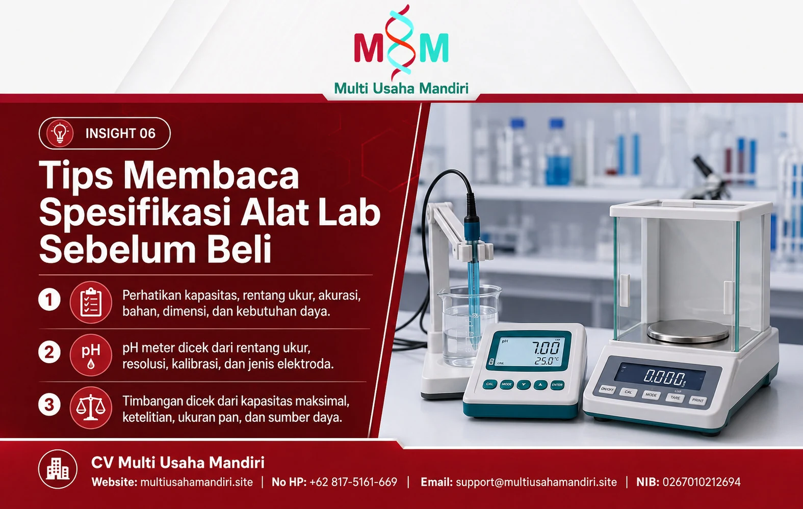
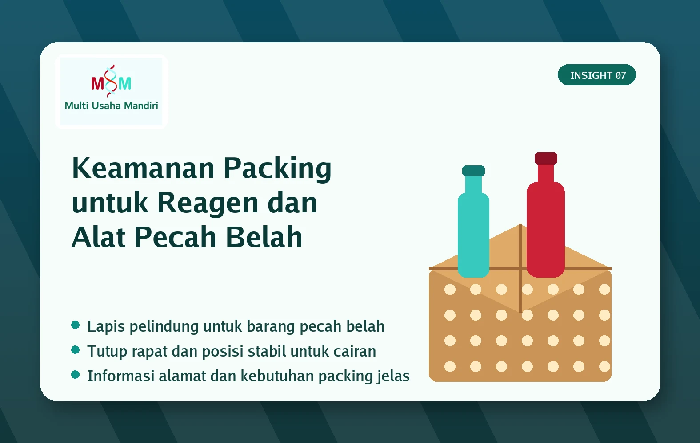
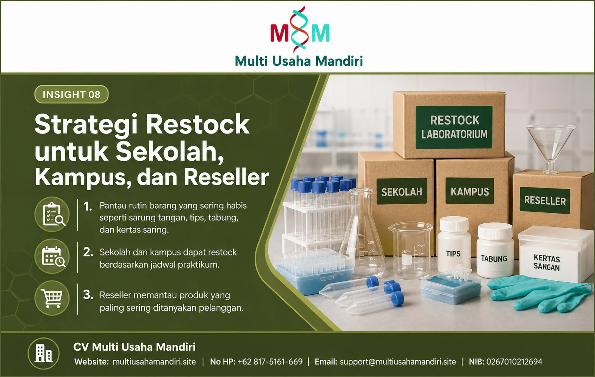
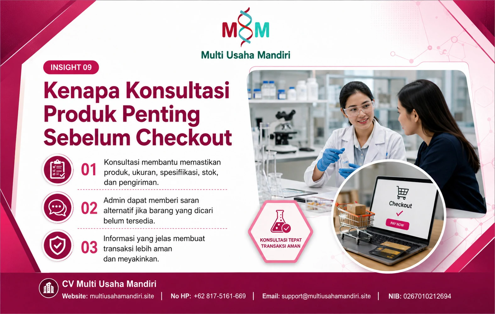
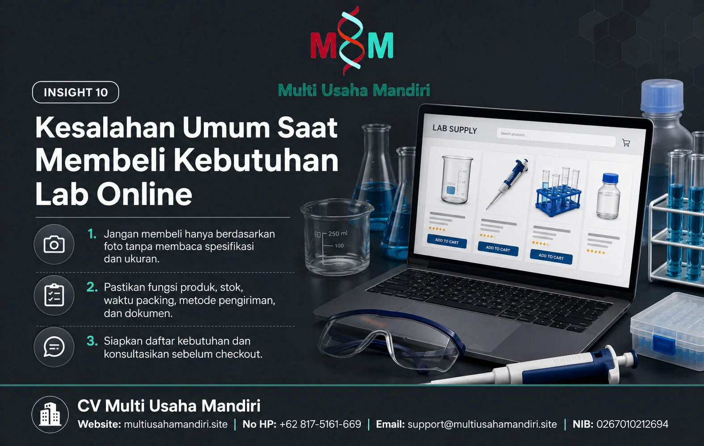

Cara Memilih Reagen Sesuai Kebutuhan Uji
Diperbarui
Pemilihan reagen harus dimulai dari jenis uji, metode kerja, tingkat kemurnian, dan kebutuhan volume. Langkah ini membantu pembeli menghindari kesalahan produk saat praktik atau analisis berlangsung.
Sebelum membeli, catat nama reagen, konsentrasi, grade, ukuran kemasan, dan standar yang dibutuhkan. Informasi ini penting untuk sekolah, kampus, laboratorium umum, maupun reseller yang ingin menyusun stok dengan lebih aman.
Pembeli juga perlu memperhatikan tanggal kedaluwarsa, nomor batch, dan dokumen pendukung jika tersedia. CV Multi Usaha Mandiri membantu pelanggan mengecek detail awal agar produk yang dipilih sesuai kebutuhan penggunaan.

Perbedaan Alat Gelas, Alat Ukur, dan Consumable Lab
Diperbarui
Alat laboratorium memiliki fungsi yang berbeda. Alat gelas dipakai untuk menampung atau mencampur, alat ukur dipakai untuk membaca nilai, sedangkan consumable lab dipakai habis dalam proses kerja.
Contoh alat gelas mencakup beaker glass, erlenmeyer, gelas ukur, dan pipet kaca. Contoh alat ukur mencakup pH meter, thermometer, timbangan, dan mikropipet. Consumable mencakup pipette tips, tabung, sarung tangan, masker, dan kertas saring.
Memahami perbedaan ini membantu pembeli membuat daftar belanja yang tepat. Reseller juga lebih mudah menyusun kategori katalog supaya pelanggan tidak bingung saat memilih produk.

Pentingnya COA, MSDS, Batch, dan Expired Date
Diperbarui
Dokumen dan data produk membantu pelanggan memahami mutu, keamanan, dan riwayat barang. Untuk reagen tertentu, informasi seperti COA, MSDS, batch, dan expired date perlu diperiksa sejak awal.
COA memberi gambaran spesifikasi produk. MSDS menjelaskan informasi keselamatan. Batch membantu pelacakan barang. Expired date membantu pengguna menilai masa pakai produk sebelum digunakan di kegiatan praktikum atau analisis.
CV Multi Usaha Mandiri menyarankan pembeli menanyakan detail ini sebelum checkout, terutama untuk kebutuhan sekolah, kampus, instansi, dan reseller yang menjual ulang produk laboratorium.

Cara Menyimpan Reagen agar Mutu Tetap Stabil
Diperbarui
Penyimpanan reagen tidak boleh asal. Suhu, cahaya, kelembapan, ventilasi, dan label produk harus diperhatikan agar produk tetap aman dan sesuai fungsi.
Reagen tertentu perlu disimpan di tempat sejuk, tertutup rapat, jauh dari panas, dan tidak tercampur dengan bahan yang tidak kompatibel. Label harus mudah dibaca agar pengguna tidak salah mengambil produk.
Untuk pembelian dalam jumlah banyak, gunakan sistem stok masuk dan stok keluar. Cara ini membantu sekolah, kampus, toko, dan reseller mengurangi risiko barang lama tertumpuk tanpa terpantau.

Checklist Order Alat dan Bahan Laboratorium
Diperbarui
Order kebutuhan laboratorium akan lebih rapi jika pembeli menyiapkan daftar produk sejak awal. Daftar ini sebaiknya memuat nama barang, ukuran, jumlah, merek pilihan, dan kebutuhan penggunaan.
Untuk alat, cek kapasitas, satuan ukur, bahan, ketelitian, dan kelengkapan aksesori. Untuk bahan, cek konsentrasi, grade, kemasan, expired date, dan kebutuhan dokumen pendukung.
Checklist sederhana membuat komunikasi dengan admin lebih cepat. Admin dapat membantu memberi alternatif jika stok berubah atau jika ada produk lain yang lebih sesuai dengan kebutuhan.

Tips Membaca Spesifikasi Alat Lab Sebelum Beli
Diperbarui
Spesifikasi alat lab menentukan kecocokan produk dengan pekerjaan pengguna. Jangan hanya melihat nama produk. Perhatikan kapasitas, rentang ukur, akurasi, bahan, dimensi, dan kebutuhan daya listrik.
Contohnya, pH meter perlu dicek rentang ukur, resolusi, kebutuhan kalibrasi, dan jenis elektroda. Timbangan perlu dicek kapasitas maksimal, ketelitian, ukuran pan, dan sumber daya.
Dengan membaca spesifikasi, pembeli dapat mengurangi risiko salah beli. Reseller juga dapat menjelaskan produk dengan lebih akurat saat menawarkan barang ke pelanggan.

Keamanan Packing untuk Reagen dan Alat Pecah Belah
Diperbarui
Packing menjadi bagian penting dalam pengiriman alat dan bahan laboratorium. Produk pecah belah, cairan, dan barang sensitif perlu perlindungan yang sesuai.
Alat gelas sebaiknya diberi pelindung berlapis dan ruang aman di dalam kemasan. Produk cair perlu posisi yang stabil, tutup rapat, dan perlindungan tambahan agar mengurangi risiko bocor saat pengiriman.
Pembeli perlu memberi informasi alamat lengkap, jenis pengiriman, dan kebutuhan packing tambahan. Hal ini membantu admin menyiapkan pesanan dengan lebih aman sebelum dikirim.

Strategi Restock untuk Sekolah, Kampus, dan Reseller
Diperbarui
Restock produk laboratorium perlu mengikuti pola penggunaan. Barang yang sering habis seperti sarung tangan, pipette tips, tabung, dan kertas saring perlu dipantau lebih rutin.
Sekolah dan kampus dapat membuat daftar kebutuhan berdasarkan jadwal praktikum. Reseller dapat memantau produk yang paling sering ditanyakan pelanggan, lalu menyesuaikan jumlah stok secara bertahap.
Strategi restock yang rapi membantu modal tidak terkunci di produk yang lambat bergerak. Proses penjualan juga lebih stabil karena barang penting tersedia saat pelanggan membutuhkan.

Kenapa Konsultasi Produk Penting Sebelum Checkout
Diperbarui
Konsultasi sebelum checkout membantu pembeli memastikan produk, ukuran, spesifikasi, stok, dan kebutuhan pengiriman. Langkah ini penting karena produk laboratorium sering memiliki varian yang mirip.
Admin dapat membantu mengecek pilihan produk dan memberi saran alternatif jika barang yang dicari belum tersedia. Proses ini membuat transaksi lebih jelas sebelum pembeli melakukan pembayaran.
Bagi reseller, konsultasi juga membantu menyusun katalog yang lebih informatif. Informasi produk yang jelas membuat calon pembeli lebih percaya dan lebih mudah mengambil keputusan.

Kesalahan Umum Saat Membeli Kebutuhan Lab Online
Diperbarui
Kesalahan yang sering terjadi adalah membeli hanya berdasarkan foto, tidak membaca spesifikasi, tidak mengecek ukuran, dan tidak memastikan fungsi produk. Akibatnya, barang bisa tidak sesuai kebutuhan.
Pembeli juga sering lupa menanyakan stok, waktu packing, metode pengiriman, dan kebutuhan dokumen. Untuk reagen tertentu, kelalaian ini dapat menghambat kegiatan praktikum atau pekerjaan laboratorium.
Solusinya sederhana. Siapkan daftar kebutuhan, cek detail produk, konsultasikan sebelum checkout, dan simpan bukti komunikasi. Cara ini membuat proses order lebih aman dan lebih terarah.